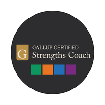

Leadership is infrastructure
Your company runs on you.That was never the plan.
Somewhere between the first hire and the fortieth, every decision started routing through one desk. Not because anyone designed it that way. Because nobody designed it at all.

Pick the one that sounds most like you
You already know which one is yours. One only, and the closest fit rather than the complete picture. What you choose names the part of the system to look at first.
Client work
Not praise. Changed behavior.
I participated in a delegation workshop sponsored by my employer, and used the framework in a 1:1 the next day. That doesn’t happen with most workshops.
I run a real dashboard for a living. I came in skeptical of the metaphor – I left with a usable distinction between what’s actually a leading indicator and what’s just a soft signal I’d have noticed anyway.
Most people assume you can hire fast and fire decisively. My world can’t. What I appreciated is that the core framework still held up once I did the translation myself, and Matt’s workshop does that translation for you.
What I do
Three kinds of room, one argument
Executive coaching and fractional operations for the founder who has become the bottleneck. We build the decision architecture, the handoff system and the operating cadence that let the company keep moving when you are not in the room.
Twenty years in schools, seventeen of them at McDonogh, as teacher, coach, dean of students and administrator. Leadership development for the adults in the building: heads and senior teams, division directors and department chairs, and the people leading from the middle who were handed a program and no training. Shaped like a school year and priced like a budget line.
Leadership development under real consequence, built in humanitarian assistance at USAID. For nonprofit and public-sector teams where the work matters, the resources do not stretch, and nobody was trained to lead before they were asked to.
Who you’d be working with
Twenty years inside the problem before I sold anyone a solution
Teacher, coach, dean of students and administrator across nearly two decades at an independent school. Then leadership and team development in humanitarian assistance at USAID. Now growth-stage founders, where honest feedback is the only kind on offer.
- Gallup-Certified Strengths Coach
- EQ-i 2.0 Certified Practitioner
- MSc in Sociology, London School of Economics
- MA in Education, Johns Hopkins University
- Working toward ICF credentials

-

GallupCertified Strengths Coach - EQ-i 2.0Certified practitioner
- London School of EconomicsMSc, Sociology
- Johns HopkinsMA, Education
- USAIDLeadership and team development
Next step
Thirty minutes, and you’ll know whether this is worth continuing
No deck, no pitch. Bring the thing that keeps landing back on your desk, and we will work out together whether it is a people problem or a design problem. It is almost always a design problem.
If it is not a fit I will say so on the call and send you the chapter that is. No deck, no follow-up sequence, no second call you did not ask for.
Prefer email? matt@thatsgoodedesign.com